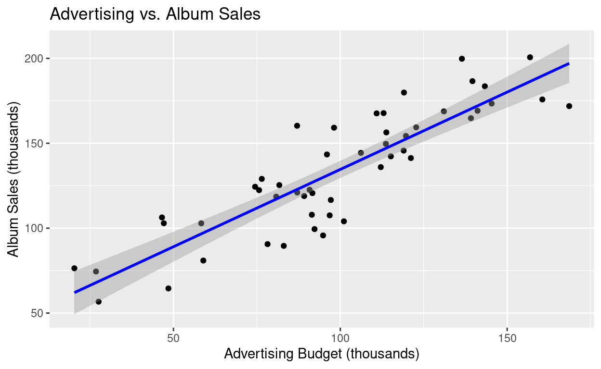
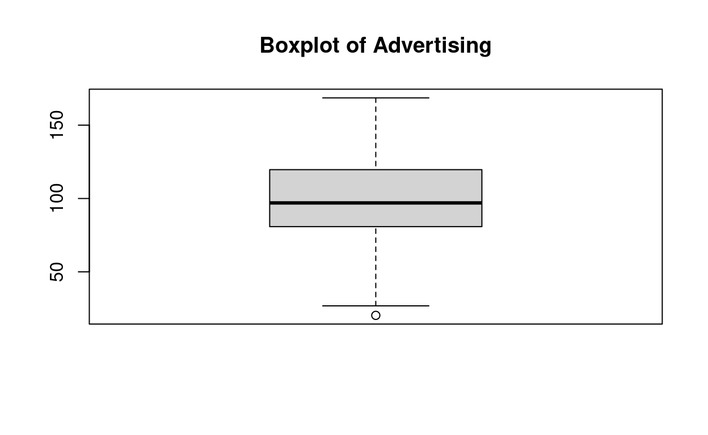
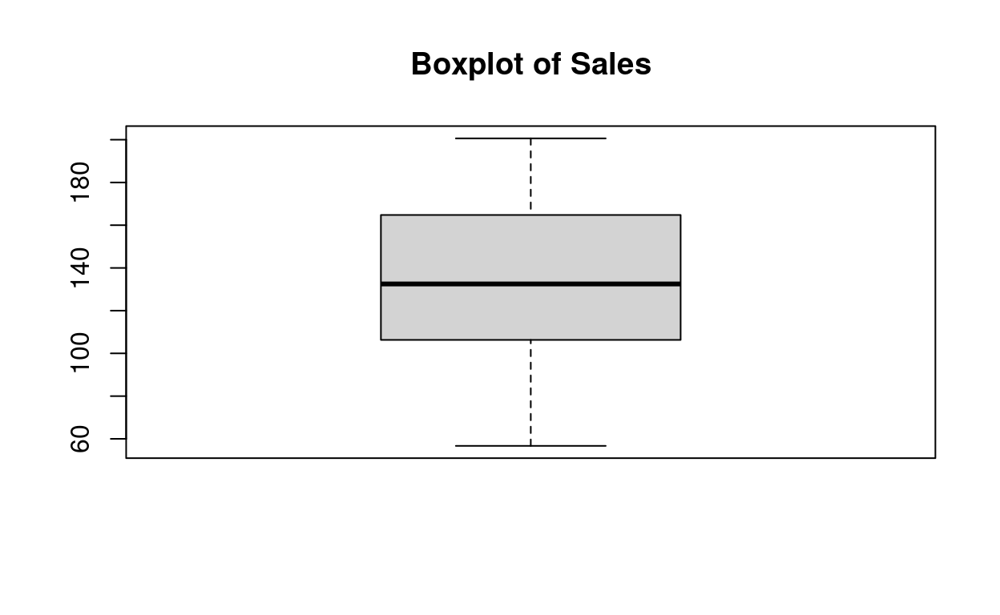
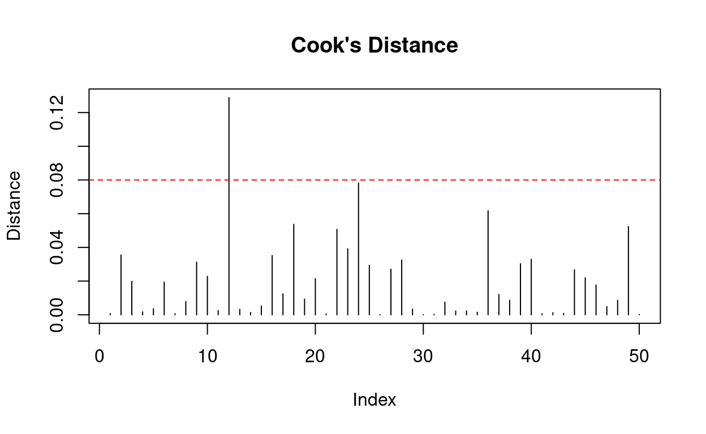
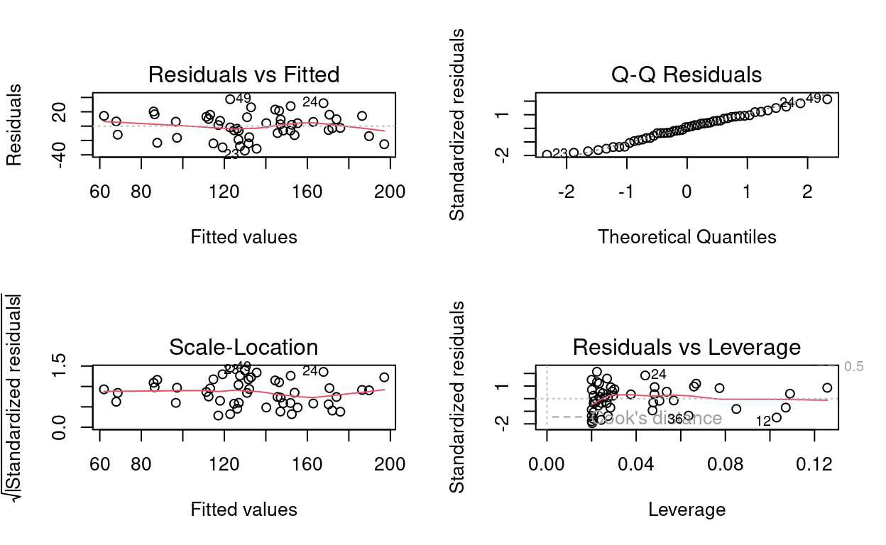

Predicting Values with Regression
What’s linear regression?
Linear regression models the relationship between a dependent variable (Y) and one or more independent variables (X) using the equation of a straight line.
For example, imagine you want to predict students’ test scores (Y) based on the number of hours they study (X). A linear regression would model that relationship as a straight line.
Linear Regression Model
Equation:
Y = b0 + b1 * X + ϵ
Where:
Y = outcome variable
X = predictor variable
b0 = intercept (Y when X = 0)
b1 = slope (change in Y for a 1-unit change in X)
ϵ (epsilon) = error term (residual, random noise)

Assumptions of Linear Regression
- Linearity – Relationship between X and Y is linear.
- Independence – Each observation provides new information (no duplicates or time-based dependencies).
- Homoscedasticity – The variance of errors is the same across all values of X.
- Normality – Residuals are normally distributed.
How Do We Estimate the Line? (OLS)
Linear regression uses Ordinary Least Squares (OLS) to find the line that best fits the data. It does this by minimizing the squared differences between actual and predicted values (residuals).
Why squared differences?
Emphasizes larger errors
Keeps negatives from canceling out positives
Ensures a unique solution
Estimating the slope (b1~) and intercept (b0~):
\(b_{1}\) = sum( (\(X_{i}\) - \(\bar{x}\))*(\(Y_{i}\) - \(\bar{y}\)) ) / sum( (\(X_{i}\) - \(\bar{x}\))^2 )
\(b_{0}\) = \(\bar{y}\) - \(b_{1}\) * \(\bar{x}\)

This gives you the equation of the line that minimizes prediction errors.

Measuring Model Fit
The model based on the data might not reflect reality. We need some way of testing how well the model fits the observed data.
How?
F
R2
Sums of Squares
To understand how well the model explains the data, we break down the variance:
Total Sum of Squares (SST): Total variation in Y. Measures the total variability in Y. How far each observed value is from the overall mean.
SST = sum( (Y~i~ - Ybar)\^2 )
Residual Sum of Squares (SSR): Error not explained by the model. Measures the leftover error. How far each observed value is from its predicted value.
SSR = sum( (Y~i~ - Yhat_i)\^2 )
Model Sum of Squares (SSM): Variation explained by the regression. Measures how much of the variability is explained by the regression model. How far predicted values are from the mean).
SSM = sum( (Yhat_i - Ybar)\^2 )
Relationship:
SST = SSM + SSRIf the model results in better prediction than using the mean, then we expect SSM to be much greater than SSR.

For formulas above, where:
Yi: The actual observed value of the outcome variable for the i-th observation.Ybar: The mean (average) of all the observed Y values.Yhat_i: The predicted value of Y for the i-th observation, calculated from the regression model.
Testing the Fit: Fit Check
R-squared (R²)
R² tells us what proportion of the variance in Y is explained by the model.
R² = SSM / SST
Ranges from 0 to 1
Closer to 1 means better prediction
Example: R² = 0.75 means 75% of the variability in Y is explained by X.
F-Test
The F-test asks: Does this model explain a significant amount of variance in Y?
F = MSM / MSE
Where:
MSM = SSM / k
# Mean square for model (k = number of predictors)MSE = SSR / (n - k - 1)
# Mean square error
A larger F indicates that the model is better than using the mean alone to predict Y.
Testing Predictors (t-Test)
For each predictor (e.g., X), we test if its slope b differs significantly from 0.
t = b / SEb
Where:
- SEb = sqrt( MSE / sum( (Xi - Xbar)^2 ) )
This helps determine if the predictor contributes meaningfully to the model.
How well does the model fit the data?
There are two ways to assess the accuracy of the model in the sample:
Residual statistics: Standardized residuals
Influential cases: Cook’s distance
Standardized Residuals
In an average sample, 95% of standardized residuals should lie between +- 2. 99% of standardized residuals should lie between +- 2.5.
Outliers: Any case for which the absolute value of the standardized residual is 3 or more, is likely to be an outlier.
Cook’s Distance
Cook’s distance is a measure of the influence of a single case on the model as a whole.
Weisberg (1982): Absolute values greater than 1 may be cause for concern.
Confidence and Prediction Intervals
When using linear regression to make predictions, it’s important to understand not just what value is predicted, but also how confident we are in that prediction. Confidence and prediction intervals provide a range around the prediction, acknowledging uncertainty.
.
Confidence Interval for the Slope:
This interval gives a range of plausible values for the slope coefficient (b). It tells us how precisely we have estimated the effect of X on Y.
CI = b ± t_crit * SEb
Where:
b: estimated slope
SEb: standard error of the slope
t_crit: t-value from the t-distribution based on degrees of freedom and desired confidence level (e.g., 1.96 for 95%)
Interpretation: We are, for example, 95% confident that the true slope lies within this interval.
.
Confidence Interval for the Mean Prediction (Yhat):
This interval estimates the average value of Y at a particular value of X. It is useful for predicting the mean response of a group.
SE_Yhat = s_e * sqrt( 1/n + (Xh - Xbar)^2 / sum( (Xi - Xbar)^2 ) )
CI = Yhat ± t_crit * SE_Yhat
Where:
Xh: the specific value of X at which the prediction is made
Xbar: mean of all X values
s_e: standard error of the regression (root mean square error)
n: number of observations
Interpretation: We are 95% confident that the average Y value at Xh falls within this range.
.
Prediction Interval for a New Observation:
A prediction interval is similar to a confidence interval, but it includes the additional uncertainty of predicting a single new observation (not the average of a group).
SE_pred = s_e * sqrt( 1 + 1/n + (Xh - Xbar)^2 / sum( (Xi - Xbar)^2 ) )
PI = Yhat ± t_crit * SE_pred
Prediction intervals are wider than confidence intervals because they include variability in both the estimated mean and the individual outcome.
Example
Step 1: Load your data
The primary predictor is
advertising.The outcome
salesis a function ofadvertisingplus random noise.airplayandimageare included as additional context but not used in the simple regression.
# Set seed for reproducibility
set.seed(42)
# Sample size
n <- 50
# Generate fake data
advertising <- round(rnorm(n, mean = 100, sd = 30), 2) # advertising budget in thousands
airplay <- round(rnorm(n, mean = 50, sd = 15)) # radio plays (not used here)
image <- round(rnorm(n, mean = 5, sd = 2), 2) # band image score (not used here)
# Generate outcome variable: sales (in thousands)
# sales depend mostly on advertising
sales <- round(50 + 0.85 * advertising + rnorm(n, mean = 0, sd = 20), 2)
# Combine into a data frame
albums <- data.frame(
advertising = advertising,
airplay = airplay,
image = image,
sales = sales
)
# View first few rows
head(albums)Step 2: Explore your data
Visualize the relationship.
# Load ggplot2 (if not already loaded)
library(ggplot2)
# Scatterplot with a regression line
ggplot(albums, aes(x = advertising, y = sales)) +
geom_point() +
geom_smooth(method = "lm", se = TRUE, color = "blue") +
labs(title = "Advertising vs. Album Sales",
x = "Advertising Budget (thousands)",
y = "Album Sales (thousands)")## `geom_smooth()` using formula = 'y ~ x'
Check if variables have missing values.
summary(albums)## advertising airplay image sales
## Min. : 20.31 Min. : 5.00 Min. : 0.950 Min. : 56.71
## 1st Qu.: 81.03 1st Qu.:42.25 1st Qu.: 3.820 1st Qu.:106.61
## Median : 96.99 Median :54.00 Median : 4.500 Median :132.48
## Mean : 98.93 Mean :51.54 Mean : 4.698 Mean :133.62
## 3rd Qu.:119.52 3rd Qu.:60.00 3rd Qu.: 5.265 3rd Qu.:163.66
## Max. :168.60 Max. :74.00 Max. :10.400 Max. :200.63sum(is.na(albums))## [1] 0Check for outliers.
boxplot(albums$advertising, main = "Boxplot of Advertising")
boxplot(albums$sales, main = "Boxplot of Sales")
Step 3: Fit the Regression Model
What to look for:
Intercept (b0): Predicted sales when advertising is zero (not always meaningful).
Slope (b1): Change in sales per £1000 increase in advertising.
R-squared: Proportion of variance in sales explained by advertising.
p-value for b1: Whether the slope is statistically significantly different from 0.
model <- lm(sales ~ advertising, data = albums)
summary(model)##
## Call:
## lm(formula = sales ~ advertising, data = albums)
##
## Residuals:
## Min 1Q Median 3Q Max
## -34.181 -12.393 1.621 12.892 37.503
##
## Coefficients:
## Estimate Std. Error t value Pr(>|t|)
## (Intercept) 43.52482 7.68618 5.663 8.18e-07 ***
## advertising 0.91066 0.07343 12.402 < 2e-16 ***
## ---
## Signif. codes: 0 '***' 0.001 '**' 0.01 '*' 0.05 '.' 0.1 ' ' 1
##
## Residual standard error: 17.76 on 48 degrees of freedom
## Multiple R-squared: 0.7621, Adjusted R-squared: 0.7572
## F-statistic: 153.8 on 1 and 48 DF, p-value: < 2.2e-16More assumptions:
# Residuals > ±3
which(abs(rstandard(model)) > 3)## named integer(0)# Compute Cook’s Distance
cooks_d <- cooks.distance(model)
# View top 5 most influential points
head(sort(cooks_d, decreasing = TRUE), 5)## 12 24 36 18 49
## 0.12885664 0.07823438 0.06177691 0.05363280 0.05230530# Plot Cook’s Distance
plot(cooks_d, type = "h", main = "Cook's Distance", ylab = "Distance")
abline(h = 4/length(cooks_d), col = "red", lty = 2)
# Cook’s Distance > 1: Usually indicates a highly influential case (red flag)
# Cook’s Distance > 4/n: A more lenient rule of thumb for smaller datasetsStep 4: Check assumptions
- Top Left: Residuals vs Fitted → checks linearity and homoscedasticity
- Top Right: Normal Q-Q → checks normality of residuals
- Bottom Left: Scale-Location → checks spread of residuals
- Bottom Right: Residuals vs Leverage → identifies influential points
# Residual diagnostic plots
par(mfrow = c(2, 2)) # plot all at once
plot(model)
par(mfrow = c(1, 1)) # reset to single plot# Normality test
shapiro.test(residuals(model))##
## Shapiro-Wilk normality test
##
## data: residuals(model)
## W = 0.98443, p-value = 0.7471# Should be p > .05 for normal residualsStep 5: Report Findings
# Predict for a new value of advertising
predict(model, newdata = data.frame(advertising = 120), interval = "confidence")## fit lwr upr
## 1 152.8035 146.8733 158.7338# You can also use interval = "prediction" for a single case prediction (wider interval).A simple linear regression was conducted to examine whether advertising spending predicts album sales. All assumptions for linear regression were checked and met, including linearity, homoscedasticity, normality of residuals, and lack of influential outliers.
The model was statistically significant, F(1, 48) = 153.80, p < .001, and explained approximately 76.2% of the variance in album sales (R² = .76). Advertising was a significant predictor of album sales, b = 0.91, t(48) = 12.40, p < .001. This indicates that for every additional £1000 spent on advertising, album sales increased by approximately 910 units, on average.
Template
library(ggplot2)# Load your data# Visualize data
ggplot(your_data, aes(x = predictor, y = outcome)) +
geom_point() +
geom_smooth(method = "lm", se = TRUE, color = "blue") +
labs(title = "Predictor vs. Outcome",
x = "Your Predictor Label",
y = "Your Outcome Label")summary(your_data)
sum(is.na(your_data))
boxplot(your_data$predictor, main = "Boxplot of Predictor")
boxplot(your_data$outcome, main = "Boxplot of Outcome")# Fit the model
model <- lm(outcome ~ predictor, data = your_data)
# View summary
summary(model)par(mfrow = c(2, 2)) # show all diagnostic plots
plot(model)
par(mfrow = c(1, 1)) # reset to default# Residuals > ±3
which(abs(rstandard(model)) > 3)# Extract the slope value directly
coef(model)[["predictor"]]
# or
b <- summary(model)$coefficients["predictor", "Estimate"]
bA simple linear regression was conducted to examine whether
[your predictor] predicts
[your outcome].
All assumptions for linear regression were checked and met, including
linearity, homoscedasticity, normality of residuals, and absence of
influential outliers. (If the data did not pass an assumption, state
that.)
The model was statistically significant, F(1, 48) = 153.80,
p < .001, and explained approximately 76.2% of the variance
in [your outcome] (R² = .76).
[Predictor] was a significant predictor, b =
0.91, t(48) = 12.40, p < .001.
This indicates that for every one-unit increase in
[predictor], [outcome] increased by
approximately 0.91 units, on average. (Report b value.)
BONUS: Multiple Linear Regression
Equation
Y = b0 + b1X1 + b2X2 + … + bnXn
- Models more complex relationships by adding predictors.
- b1 : The unique effect of X1 on Y, holding all other predictors constant.
Assumptions of Linear Regression
- No multicollinearity – In multiple regression, predictors should not be too highly correlated with each other.
- Plus all of the previous assumptions:
- Linearity – Relationship between X and Y is linear.
- Independence – Each observation provides new information (no duplicates or time-based dependencies).
- Homoscedasticity – The variance of errors is the same across all values of X.
- Normality – Residuals are normally distributed.
Building the Model
Hierarchical entry
Known predictors (based on past research) are entered into the regression model first.
New predictors are then entered in a separate step/block.
Researcher makes the decisions.
It is the best method:
Based on theory testing.
You can see the unique predictive influence of a new variable on the outcome because known predictors are held constant in the model.
Bad point:
- It relies on the researcher knowing what they’re doing!
Forced Entry
All variables are entered into the model simultaneously.
The results obtained depend on the variables entered into the model. (It is important, therefore, to have good theoretical reasons for including a particular variable.)
Stepwise entry
Variables are entered into the model based on mathematical criteria.
Computer selects variables in steps.
Problems:
Reliance on a mathematical criterion.
Variable selection may depend upon only slight differences in the semi-partial correlation.
These slight numerical differences can lead to major theoretical differences.
Should be used only for exploration.
Adjusted R²: Corrects R² for number of predictors
R2_adj = 1 - ( (1 - R2)*(n - 1) / (n - k - 1) )
Comparing Models
To see if a complex model is better than a simpler one:
- F-Test for Nested Models:
F = [ (SSR_reduced - SSR_full) / (df_reduced - df_full) ] / [SSR_full / df_full]
- AIC (Akaike Information Criterion):
AIC = 2k - 2ln(L)
Where:
k = number of parameters in the model
L = likelihood of the model
Lower AIC = better model fit